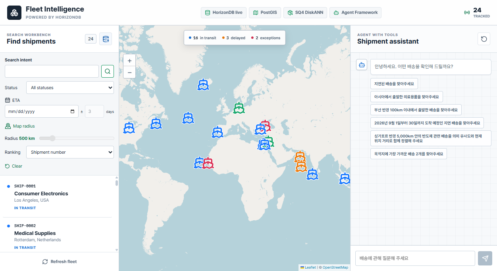

Customer technical demo
Fleet Intelligence
Powered by HorizonDB
배송의 상태·위치·화물 의미를 함께 조회하는 운영 샘플입니다.
Why this sample
하나의 HorizonDB에서 업무 데이터와 AI 검색을 함께
상태와 도착 예정일, 위치와 권역, 화물 설명의 의미를 함께 저장하고 조회합니다. PostgreSQL의 확장 생태계와 Azure의 AI·벡터 검색 기능을 결합하는 샘플입니다.
Azure HorizonDB
PostgreSQL 호환 기반 · 관계형 데이터 관리 · 확장 기능
정형 데이터
배송 상태·ETA·화물 설명
SQL · B-tree
공간 데이터
출발·도착·현재 위치와 권역
PostGIS · GiST
벡터 데이터
화물 설명의 의미와 유사도
pgvector · SQ4 DiskANN
업무 데이터 변경 → 임베딩 갱신 pipeline → 벡터 갱신
외부 모델 서비스
Azure AI Foundry
azure_ai로 외부 모델을 호출해 질문을 해석하고 임베딩을 생성합니다. 실제 추론은 Azure AI Foundry에서 실행됩니다.
업무 데이터를 용도별 외부 검색 저장소로 나누지 않고, 하나의 HorizonDB에서 필요한 조건을 함께 조회합니다.
Combined business questions
상태·시간·위치·화물 의미를 한 번에 묻는다면?
2026년 9월 도착 예정인 지연 배송 중, 아시아에서 출발한 리튬 배터리 관련 배송을 찾아주세요.
상태·ETA + 출발 권역 + 화물 의미
싱가포르 반경 5,000km 안의 반도체 관련 배송을 의미 유사도와 현재 위치 거리로 함께 정렬해 주세요.
화물 벡터 + 현재 위치·반경 + 가중 정렬
아시아에서 출발한 지연 배송 중, 목적지에 가장 가까운 2건을 찾아주세요.
상태 + 출발 권역 + 각 배송의 목적지까지 거리
정확한 업무 조건은 SQL로, 위치는 공간 연산으로, 화물 의미는 벡터로 비교하고 같은 배송 데이터의 조회 결과로 결합합니다.
Two paths, one repository
두 진입점과 공용 Repository
Search Workbench
POST /api/search/criteria
화물 검색어·상태·ETA·지도 반경을 직접 지정
조건 해석용 LLM 호출 없음
검색어가 있을 때만 임베딩
Agent with Tools
POST /api/chat/stream
한국어 질문을 ShipmentFilters로 해석
search_shipments 도구 최대 1회
cargo_query가 있을 때만 임베딩
FastAPI +
Agent Framework
입력 검사와 도구 실행
공용 Psycopg Repository가 조건을 SQL로 조합하고 값을 바인딩합니다.
Azure HorizonDB
배송 데이터 · PostGIS · pgvector · SQ4 DiskANN
동일한 도구 결과를 카드와 지도에 표시합니다.
React → FastAPI → Psycopg Repository → HorizonDB
채팅에는 화면의 상태 필터가 적용됩니다. 왼쪽 ETA·반경·화물 검색어와 이전 대화 전체는 자동으로 전달하지 않습니다.
두 가지 입력 방식, 같은 배송 데이터
Live application

알고 있는 상태·ETA·화물 조건을 직접 지정하고 배송 목록을 확인합니다.
두 검색 방식의 결과를 같은 지도에서 확인합니다. 선택한 배송의 현재 위치를 표시합니다.
한국어 질문을 검색 조건으로 해석하고, 조회된 배송을 근거로 답변합니다.
Relational + spatial + vector
복합 검색에 사용하는 데이터
정형 조건과 위치는 배송 테이블에, 화물 의미를 비교할 벡터는 별도 테이블에 저장합니다.
배송 · 정형 조건과 위치
shipments
id uuid · PK
status text
eta date
title / description text
위치 3개 · 공통 타입
geometry(Point, 4326)
origin_position
destination_position
current_position
ID JOIN · shipments.id = shipment_id
shipment_embeddings
shipment_id uuid · PK / FK
embedding vector(1536)
shipments.id = shipment_embeddings.shipment_id로 연결합니다. <=>는 저장된 벡터와 검색어 벡터를 비교합니다.
공간 비교 · origin_position ↔ boundary
region_boundaries
name text · PK
boundary geometry(MultiPolygon, 4326)
출발 좌표와 권역 경계는 ST_Covers로 비교합니다. 반경·거리는 위치를 geography로 변환해 m 단위로 계산합니다.
검색에 필요한 컬럼만 표시했습니다. 벡터 갱신용 job 테이블은 12장에서 설명합니다.
Query 01 · Filters + meaning
상태·기간·출발 권역·화물 의미로 찾기
“2026년 9월 도착 예정인 지연 배송 중, 아시아에서 출발한 리튬 배터리 관련 배송을 찾아주세요.”
적용 조건
상태·기간
delayed · 2026-09-01~30, 양 끝 포함
출발 권역
Asia · 출발 좌표를 경계와 비교
화물 의미
lithium battery → 검색어 벡터 · 유사도순
핵심 SQL 발췌 전체 실행문 아님 · %s는 바인딩 값
s.status = %s
AND s.eta >= %s::date
AND s.eta <= %s::date
AND EXISTS (
SELECT 1
FROM horizon_ship.region_boundaries AS region
WHERE region.name = %s
AND public.ST_Covers(
region.boundary, s.origin_position)
)
ORDER BY se.embedding <=> query_vector.embedding
확인 결과 · 후보 3건 중 SHIP-0011이 첫 번째였습니다. 리튬 배터리 화물이며 유사도는 0.5769입니다.
2026-09-15 확인 기준입니다. 나머지 두 후보는 전기차·의류입니다. 의미 유사도는 품목의 정확한 일치 조건이 아닙니다.
Query 02 · Radius + ranking
반경 안에서 의미와 거리로 정렬하기
“싱가포르 반경 5,000km 안의 반도체 관련 배송을 의미 유사도와 현재 위치 거리로 함께 정렬해 주세요.”
적용 조건
화물 의미
semiconductor → 검색어 벡터 · cosine 유사도
현재 위치 반경
Singapore · 5,000km → 5,000,000m
복합 정렬
semantic_spatial · 의미 72% + 근접도 28%
hybrid_score = 0.72 × 의미 유사도
+ 0.28 × max(0, 1 - 기준점 거리 / 반경)
거리·반경은 km 단위입니다.
핵심 SQL 발췌 전체 실행문 아님 · %s는 바인딩 값
1 - (se.embedding <=> query_vector.embedding)
AS similarity
public.ST_DWithin(
s.current_position::public.geography,
public.ST_SetSRID(public.ST_MakePoint(%s, %s),
4326)::public.geography, %s)
ORDER BY hybrid_score DESC, s.shipment_number ASC
LIMIT %s
확인 결과 · 6건 반환. 반경 조건을 통과한 배송을 의미 유사도와 Singapore 기준점까지의 거리로 함께 정렬했습니다.
2026-09-15 확인 기준입니다. 반경 필터와 가중 정렬은 별도 처리입니다. 점수는 성공 확률이나 품목 일치율이 아닙니다.
Query 03 · Destination distance
조건에 맞는 배송을 목적지 거리순으로 찾기
“아시아에서 출발한 지연 배송 중, 목적지에 가장 가까운 2건을 찾아주세요.”
적용 조건
상태·출발 권역
delayed + Asia · SQL + ST_Covers
거리 기준
각 배송의 현재 위치 → 자기 목적지
정렬·건수
destination_distance · 거리 오름차순, 상위 2건
핵심 SQL 발췌 전체 실행문 아님 · %s는 바인딩 값
public.ST_Distance(
s.current_position::public.geography,
s.destination_position::public.geography
) / 1000.0 AS remaining_distance_km
s.status = %s
public.ST_Covers(region.boundary, s.origin_position)
ORDER BY remaining_distance_km ASC,
s.shipment_number ASC
LIMIT %s
확인 결과 · SHIP-0005 약 1,066.17km → SHIP-0011 약 5,762.66km. 추가 일치 배송이 있어 상위 2건만 표시했습니다.
2026-09-15 확인 기준입니다. 지표면 거리이며 실제 항로·ETA가 아닙니다. 화물 의미 조건이 없어 검색어 임베딩은 호출하지 않습니다.
Model registry + external inference
등록한 모델을 DB 함수에서 호출하기
DB 경유 설정을 기준으로 설명합니다. 모델의 endpoint·deployment·인증 정보를 별칭으로 등록하고 함수에서 호출합니다.
HorizonDB · 모델 등록
model_registry.model_add(...)
horizonship-chat
-> GPT-5.4
horizonship-embedding
->
text-embedding-3-small
별칭 → 연결 정보
모델 가중치를 저장하지 않음
HorizonDB · 호출 함수
azure_ai.generate(...)
질문의 조건 해석·답변 작성
azure_openai.create_embeddings(...)
검색어를 vector(1536)로 변환
pipeline의 ai.embed(...)
변경된 배송 텍스트의 벡터 갱신
외부 서비스
Azure AI Foundry
조건 해석 · 답변 생성
텍스트 → 1,536차원 벡터
모델을 DB 안에 설치하는 것은 아닙니다. 실제 추론은 외부 Azure AI Foundry에서 실행됩니다.
CHAT_PROVIDER=horizondb, EMBEDDING_PROVIDER=horizondb일 때 검색 요청이 DB 함수를 사용합니다. 기본 직접 API 경로도 유지합니다.
Microsoft Agent Framework
질문에서 검색 결과와 답변까지
8장의 반도체·Singapore 반경 질문을 같은 예시로 사용합니다. 모델은 SQL이 아니라 검사 가능한 검색 조건을 선택합니다.
조건 해석
GPT-5.4
search 또는 clarify와 구조화된 조건 생성
검색 도구
Python · Repository
조건 검사 → 검색어 임베딩 → SQL 조합·조회
답변 작성
GPT-5.4
도구가 반환한 배송 데이터로 한국어 답변 작성
조건 JSON · 반도체 질문의 주요 인자
{
"cargo_query": "semiconductor",
"nearby_location": "Singapore",
"position_field": "current",
"radius_km": 5000,
"sort_by": "semantic_spatial"
}
검색 결과로 답변
이 조건으로 8장의 벡터 비교·반경 검사·가중 정렬을 실행합니다. search_shipments 도구는 요청당 최대 1회 호출합니다.
모호하거나 지원하지 않는 조건은 검색 없이 확인 질문으로 응답합니다. 검색 도구는 애플리케이션에서 실행하며 DB 안으로 이동하지 않습니다.
Data change → embedding update
배송 변경에 따라 임베딩 갱신하기
검색 요청과 별개의 갱신 흐름입니다. 초기 backfill 이후에는 DB pipeline이 변경된 배송의 벡터를 갱신합니다.
배송 변경
shipments INSERT·의미 필드 UPDATE
변경 선별
trigger가 임베딩 입력을 비교
변경 없음 → 종료
job 기록
shipment_embedding_jobs upsert
pipeline 실행
job의 on_change → ai.embed
벡터 갱신
shipment_embeddings upsert
변경 대상과 검색 시점
임베딩 입력에 포함된 필드
title · description · 출발/도착/현재 위치명
status · metadata
좌표·ETA만 변경 → 새 임베딩 요청 없음
배송별 텍스트 → vector(1536) 하나
현재 pipeline에는 청킹 단계가 없음
content_version 검사
갱신 대기 중인 이전 벡터는 검색에서 제외
job에는 배송별 한 행을 upsert하고 버전을 증가시킵니다. pipeline이 같은 버전의 벡터를 저장하면 다시 의미 검색에 포함됩니다.
실제 pipeline 선언 %s는 실행 시 바인딩 값
SELECT ai.create_pipeline(
name => %s,
source => ai.table_source(
table_name => 'shipment_embedding_jobs',
schema_name => 'horizon_ship', incremental_column => 'updated_at'),
steps => ARRAY[ai.embed(
input => 'embedding_input', model => %s, dimensions => 1536)],
trigger => 'on_change',
sink => ai.table_sink(
table_name => 'shipment_embeddings', schema_name => 'horizon_ship',
on_conflict => ARRAY['shipment_id'],
on_conflict_action => %s)
);Apply to your business
고객 데이터로 적용하는 방법
샘플에서 확인한 검색과 갱신 흐름을 고객 업무의 데이터·조건에 맞춰 구성합니다.
| 적용할 부분 | 샘플에서 보여준 내용 | 고객 업무에 맞출 내용 |
|---|---|---|
| 검색 대상과 조건 | 배송 상태·ETA·출발지 | 고객 데이터의 대상, 필수 조건, 조회 결과 항목 |
| 위치와 의미 검색 | 배송 좌표·권역·화물 설명 | 사용할 위치 기준과 설명 필드, 정렬 방식 |
| 변경 후 갱신 | 의미 필드 변경 → job → 임베딩 | 재임베딩이 필요한 필드와 갱신 주기·처리 방식 |
고객의 대표 질문과 샘플 데이터로 시작해, 필요한 조건이 반영되고 원하는 결과가 나오는지 확인합니다.
참고 1 · Validation and operations
검증 범위와 운영 적용 전 확인
| 확인한 내용 | 그대로 일반화하지 않을 내용 |
|---|---|
| 실제 DB 모델 호출·ETA·공간·가중 검색 | 모든 질문의 동일한 모델 해석 |
| ETA·geography 인덱스 유효 상태 | 매 검색의 DiskANN 사용이나 처리 시간 보장 |
| SQL 범위 테스트·화면·모바일 동작 | 실행 계획 노드의 정확한 원문 위치 |
| 요청별 이벤트·오류·중단 처리 | 외부 모델 요청 취소 시 비용 취소 |
현재 API는 로컬 데모용이며 인증이 없습니다. 운영 환경에서는 인증·권한·업무 데이터 마스킹·접속 정책을 설계해야 합니다. 24건 샘플로 확장성이나 검색 품질을 입증하지 않습니다.
참고 2 · Query diagnostics
예상 계획과 측정 시간을 구분
| 화면 정보 | 의미 |
|---|---|
EXPLAIN (FORMAT JSON) | 예상 행 수·비용·노드·인덱스. ANALYZE는 실행하지 않습니다. |
| 실행 내역의 DB 시간 | 클라이언트에서 측정한 execute + fetch 시간 |
| 임베딩 입력 검색어 | 벡터 변환 직전에 전달한 실제 cargo_query |
| SQL·바인딩 값 | %s와 매개변수를 분리 표시. 전체 벡터는 생략 |
CAPTURE_QUERY_PLAN=true일 때 계획을 수집합니다. 팝업을 다시 열어도 DB·모델을 호출하지 않습니다.
계획 연결이 모호하면 SQL 범위를 임의로 강조하지 않습니다.
참고 3 · Data storage
HorizonDB에 저장하는 데이터
| 구성 | 저장 내용과 역할 |
|---|---|
shipments | 상태·ETA·metadata, 출발·도착·현재 위치의 SRID 4326 Point |
shipment_embeddings | 배송 ID로 연결된 1,536차원 벡터와 content version |
shipment_embedding_jobs | 의미 필드 변경에 따른 임베딩 갱신 작업 |
region_boundaries | Natural Earth 기반 7개 권역의 MultiPolygon |
B-tree는 상태·ETA, GiST는 공간 조건, SQ4 DiskANN은 벡터 검색의 선택지입니다. 실제 접근 경로는 PostgreSQL planner가 결정합니다.
참고 4 · Search controls
Search Workbench에서 직접 지정하는 조건
| 컨트롤 | 동작 |
|---|---|
| Search intent | 화물 검색어입니다. 비워 두면 조건만 검색합니다. |
| Status / ETA | 상태와 중심일 ±일수로 범위를 지정합니다. 양 끝 날짜를 포함합니다. |
| Map radius | 지도를 클릭해 기준점을 선택합니다. 현재 위치에 50~3,000km 반경을 적용합니다. |
| Ranking | 기본 관련성순 또는 의미 72%·근접도 28%순입니다. 복합 정렬에는 검색어와 기준점이 필요합니다. |
버튼 또는 Enter로 검색합니다. 입력 변경만으로 다시 조회하지 않으며 Clear로 조건과 결과를 초기화합니다.
참고 5 · Setup and deployment
현재 저장소의 실행과 배포 범위
로컬 앱 실행
uv + npm / 별도 터미널
uv run --directory backend python -m app.server
npm --prefix frontend run dev
Backend와 frontend는 별도 터미널에서 실행합니다. 환경·모델·DB 준비는 프로젝트 README를 따릅니다.
승인 기반 인프라 배포
PowerShell + Bicep
Check ↓ WhatIf ↓ 승인 후 Deploy
인프라는 PowerShell·Bicep으로 HorizonDB와 선택적 Foundry를 준비합니다. Check → WhatIf → 승인 후 Deploy 순서입니다. 원본의 azd up·Container Apps 배포는 이 저장소에 포함하지 않았습니다. 모델 별칭만 준비할 때는 전체 DB setup 대신 --models-only를 사용합니다.